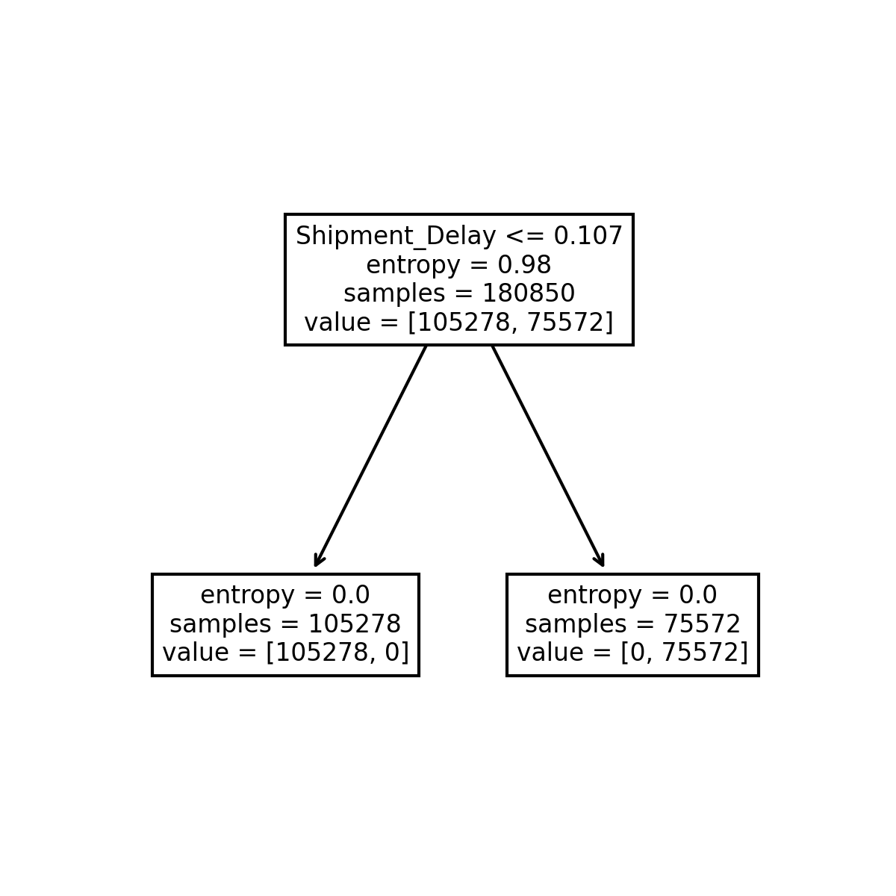

1st Moment
|
2nd Moment
|
3rd Moment
|
4th Moment
|
Outliers
|
Histograms
|
QQ Plots
|
Scatter plots and heatmaps
|
Scaled QQ Plots
Conclusion
Model
Accuracy Score
Confusion matrix
K Nearest Neighbor
0.8736
24439
1881
3830
15063
Naive Bayes
0.4538
2599
23721
971
17922
Logistic Regression
0.9976
26220
100
4
18889
Decision Tree
1.0
26320
0
0
18893
